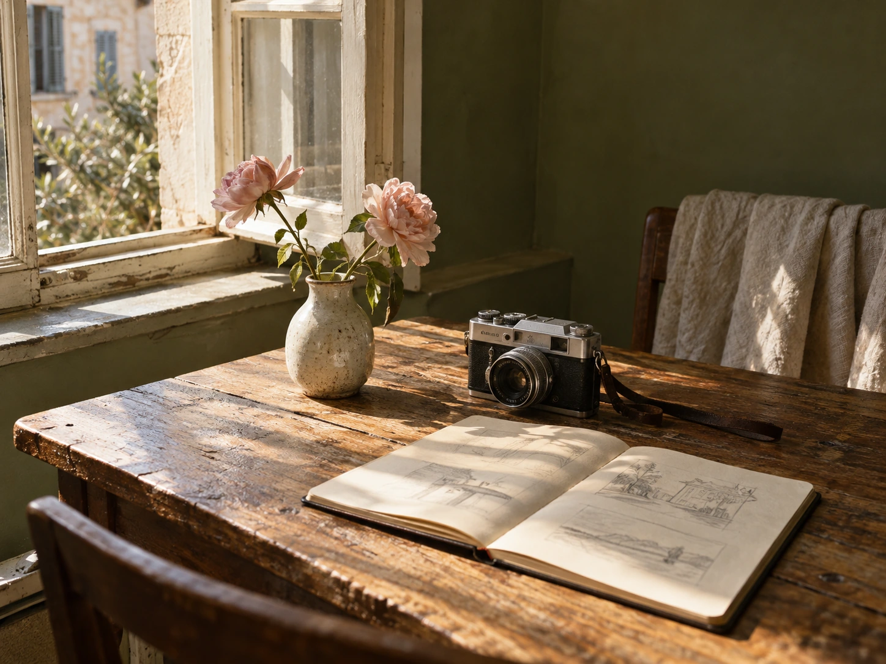

A SELECTION OF MY WORK
Selected works.

A NOTE ON MY PERSPECTIVE01 — 2026
BEHIND THE FRAMES
A little feeling.
A lasting story.
안녕하세요, 배유지입니다.
장면의 흐름과 리듬을 고민하며 영상편집을 배우고 있습니다. 짧은 순간에도 이야기가 느껴지도록, 무엇을 보여주고 어디에서 멈출지 생각합니다.
영상 기획, 브랜드 스토리, 비주얼 디자인을 오가며
저만의 시선을 차곡차곡 쌓아가고 있습니다.
YujiVIDEO EDITING
& VISUAL STORYTELLING
작업의 시작과 과정 살펴보기
& VISUAL STORYTELLING
HOW I SEE, HOW I MAKE
01
Find the story.
타깃과 메시지를 살펴보고,
이야기가 시작되는 지점을 찾습니다.
02
Feel the rhythm.
장면과 소리, 전환의 호흡을 연결해
자연스러운 흐름을
고민합니다.
03
Leave a feeling.
색과 작은 디테일을 다듬어
기억에 남을 한 장면을 만듭니다.
IDEAS, DRAFTS & DETAILS
The working archive.
완성된 모습 너머,
작업의 생각과 과정을 담았습니다.